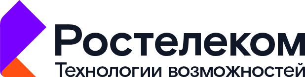

HR Помощник — AI-платформа, которая помогает HR-командам быстрее исследовать проблемы и проектировать улучшение HR-процессов на основе проверяемых источников, от AS-IS до обоснованного TO-BE.
Загрузка…
HR-аналитики, HRBP, руководители и участники HR-проектов, специалисты по организационному развитию и трансформации HR-процессов.
Пользователи регулярно решают задачи:
Экономический заказчик: HRD, руководитель HR-функции, руководитель трансформации или цифровизации.
B2B / корпоративные решения / AI и автоматизация бизнес-процессов.
Внутри Ростелекома продукт может использоваться как внутренний инструмент HR-трансформации, а в дальнейшем как B2B-решение для крупных корпоративных клиентов.
Проблема конечных пользователей, которую решает продукт.
HR-проектные команды тратят значительное время на ручной поиск информации, изучение десятков источников, описание текущего процесса AS-IS, поиск лучших практик, сопоставление вариантов решений и подготовку материалов для принятия управленческого решения.
Один аналитик при подготовке исследования или проекта изменения HR-процесса выполняет вручную:
В результате исследование или проработка одного HR-процесса может занимать несколько рабочих дней, а качество результата сильно зависит от опыта конкретного специалиста.
Гипотеза для проверки на интервью: HR Помощник может сократить трудозатраты на такой цикл в несколько раз и снизить зависимость результата от квалификации отдельного аналитика.
HR Помощник — AI-платформа для доказательного исследования и улучшения HR-процессов.
Пользователь описывает HR-задачу или текущий процесс, после чего система:
Это не обычный AI-чат: существенные факты в отчете связываются с конкретными источниками, а пользователь может проверить, на каких материалах основан вывод. Такой механизм уже заложен в текущую архитектуру HR Помощника.
Основная модель — B2B SaaS / корпоративная лицензия.
Платный пилот на 1–2 HR-процессах с измерением эффекта:
После успешного пилота — годовая корпоративная лицензия на HR Помощник.
Возможные модели тарификации:
Ценовая гипотеза: пилот 0,5–1,5 млн руб.; годовая лицензия от 0,8–2 млн руб. в зависимости от масштаба и функций.
TAM. Крупные и средние работодатели, использующие HR-аналитику, HR-трансформацию, автоматизацию процессов и корпоративные AI-инструменты.
SAM. Компании от 500 сотрудников с развитой HR-функцией, регулярными проектами по изменению процессов и потребностью в аналитике, benchmarking и автоматизации HR.
SOM. Первые корпоративные внедрения через Ростелеком и пилоты у существующих B2B-заказчиков.
Гипотеза для проверки: 20–50 пилотов за первые 3 года; средний годовой чек от 0,8 до 2 млн рублей на заказчика.
Расчет рынка: количество доступных корпоративных заказчиков × средний годовой чек.
TAM, SAM, SOM и чек сейчас являются гипотезами и должны быть подтверждены интервью и расчетом, а не подаваться как доказанные факты.
ФИО, подразделение и корпоративную почту нужно внести перед подачей.
| ФИО | Роль | Корп. почта | Место работы |
|---|---|---|---|
| [внести] | Лидер / Product Owner | [внести] | [внести] |
| [внести] | HR / Process Expert | [внести] | [внести] |
| [внести] | Технический участник | [внести] | [внести] |
Лидер / Product Owner. Управление проектами и цифровой трансформацией, HR-проекты, анализ и оптимизация бизнес-процессов, формирование требований, разработка и проверка продуктовых гипотез.
HR / Process Expert. Методология HR-процессов, проверка бизнес-гипотез, интервью, описание AS-IS и TO-BE, оценка эффекта пилота.
Технический участник. AI-архитектура, интеграции, backend/frontend, безопасность, развитие прототипа, подготовка production-версии.
Текущее состояние: рабочий прототип HR Помощника уже создан. В продукте реализованы поиск и сбор источников, AI-анализ, Source ID, Evidence Score, Process Excellence, сохранение исследований, квоты и мониторинг.
